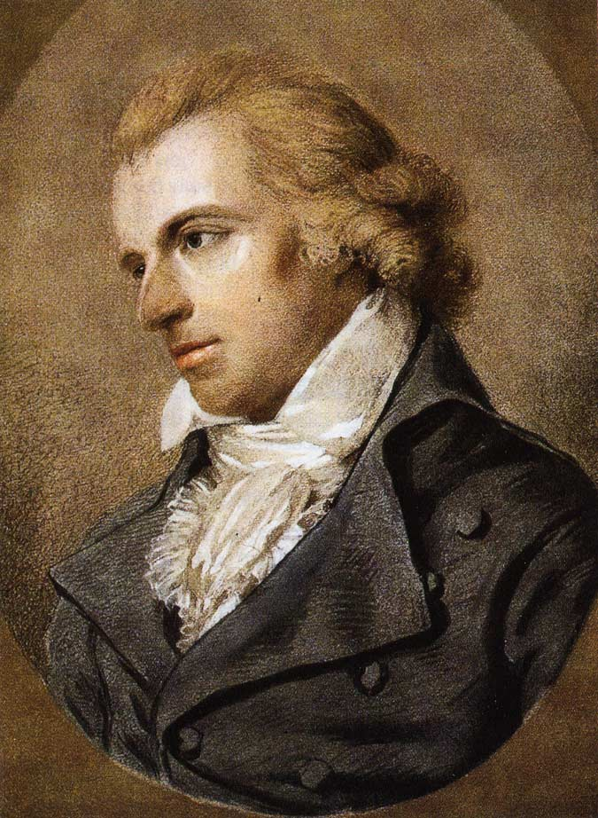

One Scene
“Grant freedom of thought!”
In Don Carlos, the Marquis Posa stands before the most powerful man on Earth and asks for the one thing power cannot survive granting. Every dissident smuggling a manuscript since 1787 has been playing that scene. See it staged once and you will understand this Institute’s theory of politics better than any pamphlet could teach it.
Watch the scene, with commentary